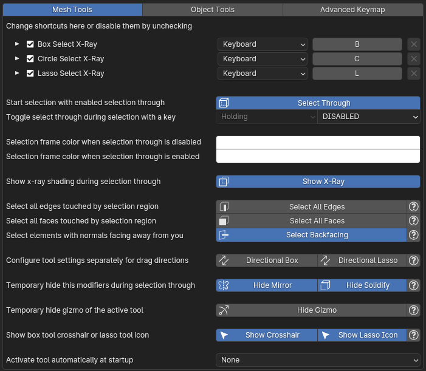
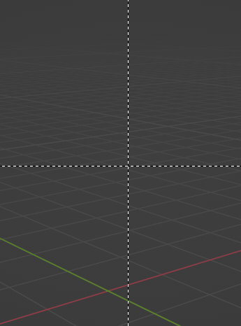
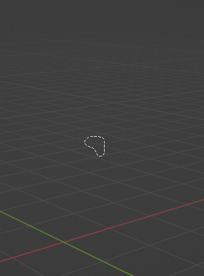

Shortcuts
Shortcuts for tools in edit mode.
Selection through
This toggle defines whether the x-ray tools will select through or not. The button below allows you to toggle the state of selection through.
For example, you can turn off selection through and x-ray tools will work just like the default blender tools and set a key to turn it on when it's needed:
Selection frame colors
Setting different colors can be useful to see if selection through is enabled or not if you disabled x-ray shading:
Show x-ray shading
When this toggle is turned off, x-ray shading won't automatically turn on in selection through mode:
Select all edges and faces
By default, in selection through mode tools select edges that have both their vertices inside the selection region and faces with their center dot inside the selection region:
To select all edges or faces that touch the selection region enable "Select All" toggles (this is slower than the default selection on meshes with a lot of geometry):
Select backfacing
By default, in selection through mode tools select elements regardless of their normal directions.
Disable this option if you want to select only elements with back side facing away from you (this is slower than the default selection on meshes with a lot of geometry):
Directional box and lasso tools
Toggle separate configuration of tool settings for left-to-right and right-to-left directions. For example, you can set up left-to-right drag direction to select through and right-to-left direction to perform default selection:
Hide gizmo of active tool
Hide gizmo of the active tool (such as the scale gizmo) for the duration of the selection and restore it after finishing selection.
Hide mirror and solidify modifiers
Hide mirror modifier or solidify modifier during selection through and re-enable them after finishing selection. This can be useful on dense mesh, making it easier to see real geometry in x-ray shading.
Show box crosshair or lasso icon
When you initialize a tool with a keyboard shortcut (for example default B, C, L shortcuts) it displays a starting indicator - crosshair for box tool and lasso icon for lasso tool:
 
This toggles can disable them.
Activate tool at startup
The tool specified in this option will be set as active in the toolbar automatically when you start blender or load a save file.